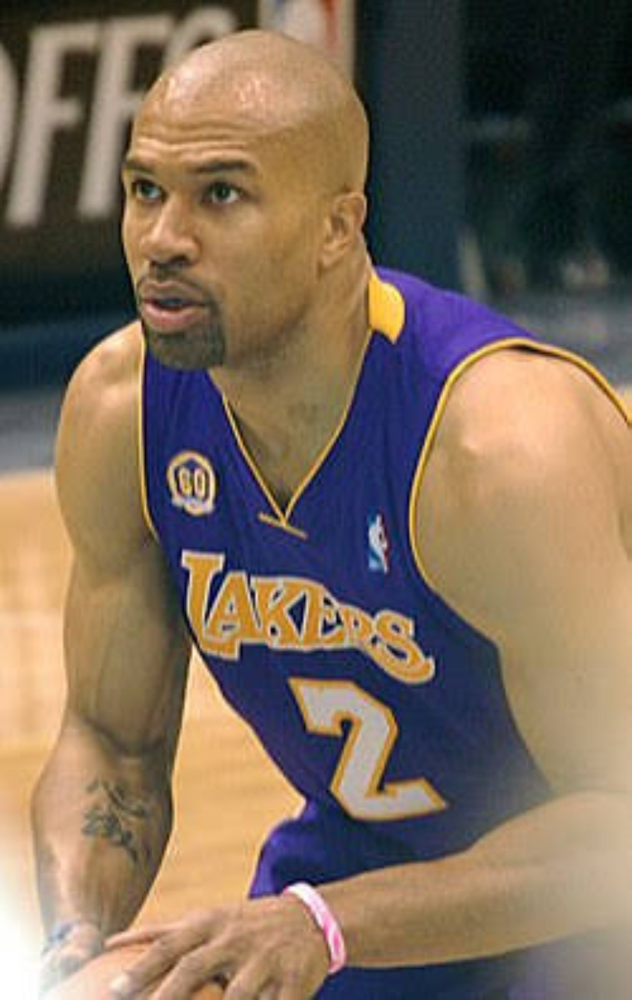
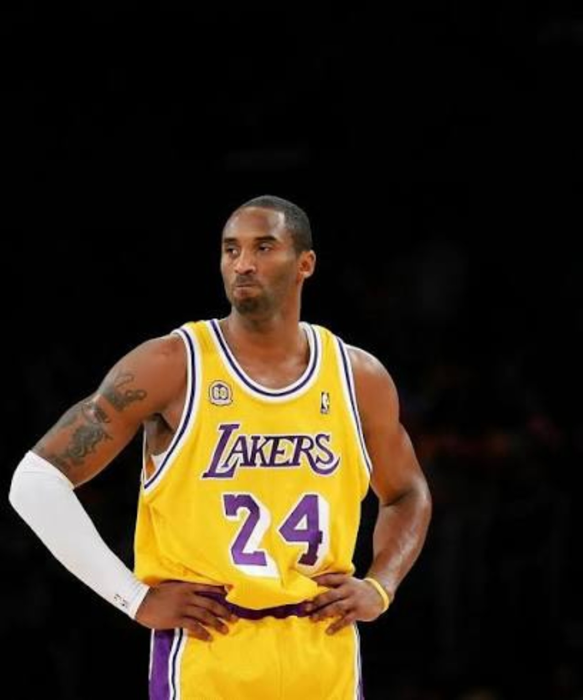
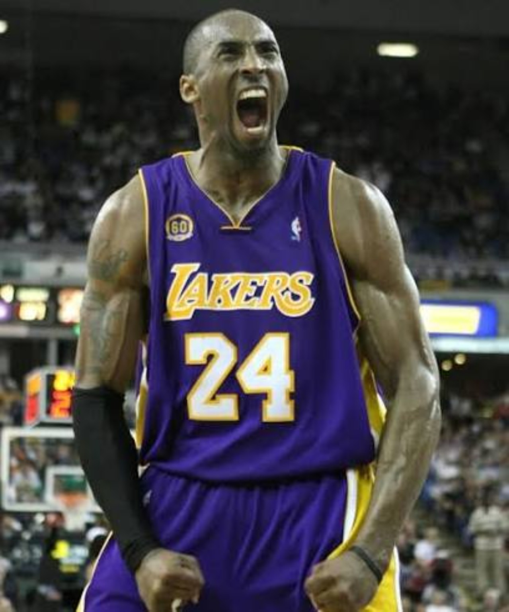
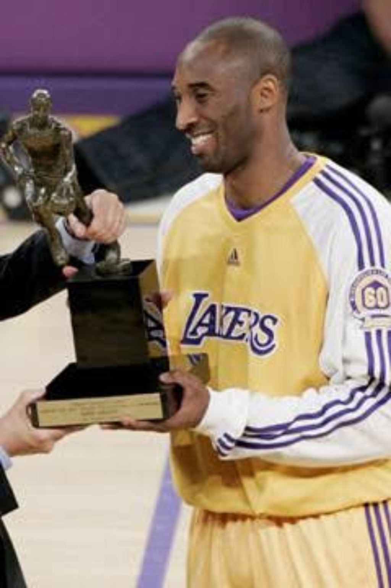
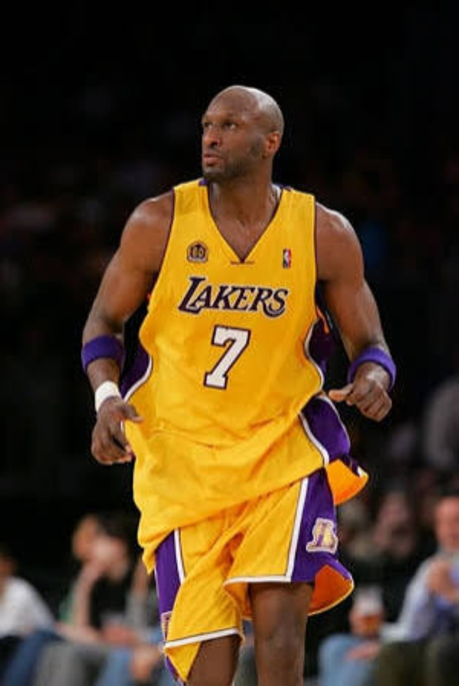
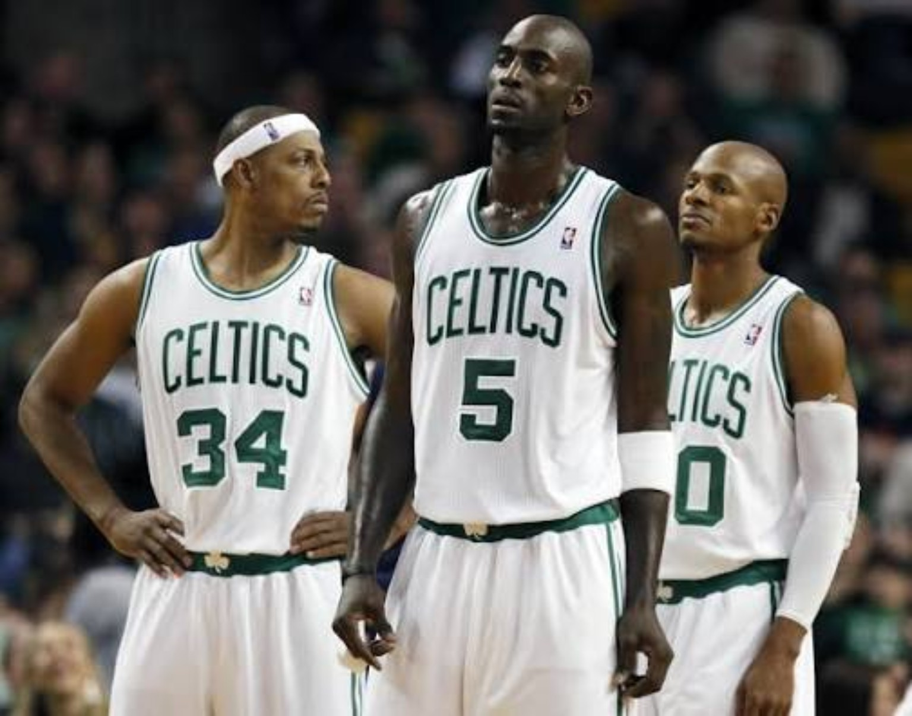
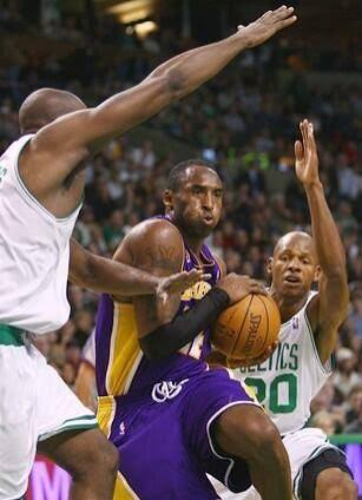
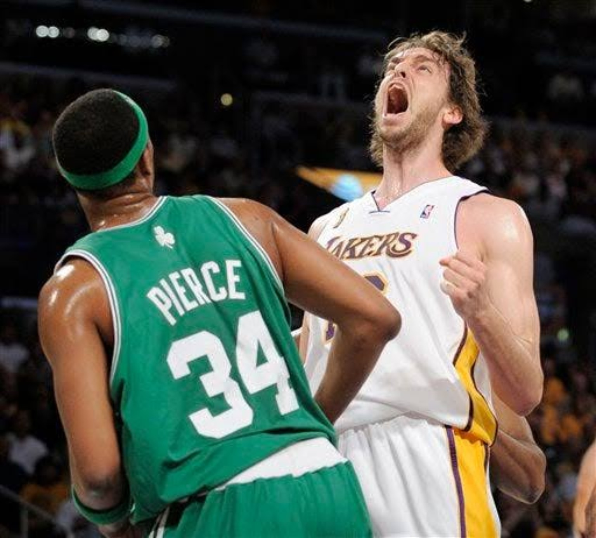

The scoring explosions never disappeared. The difference was that Los Angeles finally stopped requiring one every night.
01. THE CLOCK WAS TICKING.
The season began with the possibility that Kobe Bryant’s Lakers career could end. After another first-round exit and a turbulent summer, our feeling was simple: if this team started badly, Kobe could be gone by the trade deadline.
Instead, the Lakers gave him reasons to stay. Derek Fisher returned. Trevor Ariza arrived. Andrew Bynum began looking like a different player. Most importantly, Los Angeles started winning. The relationship wasn’t repaired by one move. First, the Lakers showed Kobe there was something worth saving.

02. BYNUM STARTED ANSWERING THE QUESTIONS.
Kobe had been openly critical of the direction of the roster during the offseason, and Bynum was right in the middle of that conversation. Then the 20-year-old responded on the floor. In 35 games he averaged 13.1 points, 10.2 rebounds and 2.1 blocks while shooting 63.6 percent.
We saw one of the league’s most promising young post bigs: a center who wanted the ball on the block, could score with touch, rebound and alter shots. Maybe, with health and time, Bynum could have grown into a legitimate No. 2 option. His January knee injury changed the season.
03. “I THOUGHT IT WAS FAKE NEWS.”
Then came February 1, 2008. Pau Gasol was a Laker.
Los Angeles received Pau Gasol and a future second-round pick. Memphis received Kwame Brown, rookie Javaris Crittenton, Aaron McKie, the draft rights to Marc Gasol and two future first-round picks.
This wasn’t a desperate rescue of a dead season. The Lakers had already shown they belonged near the top of the West. The Gasol trade announced something bigger: Los Angeles was trying to win now.
04. PAU PUT EVERYBODY BACK IN PLACE.
The fit clicked immediately. Gasol could score inside, pass, rebound and think the game at the level Phil Jackson’s offense demanded. With Bynum unavailable, Pau could play the 5. More importantly, he became the legitimate second option Kobe had been missing.
That allowed Odom to move toward the role that always made the most sense for him: versatile connector instead of conventional second scorer. Pau did not simply give Kobe another star. He put the Lakers’ roster back in its proper order.

05. THE MOST COMPLETE KOBE.
Kobe averaged 28.3 points, 6.3 rebounds and 5.4 assists and played all 82 games. Those numbers were less outrageous than 35.4 points in 2005–06 or the scoring barrages of 2006–07. That is exactly why this season feels different.
This wasn’t the most dominant Kobe we’d seen. It was the most complete. He could still take over as a scorer, but the Lakers were finally good enough for him to control games without having to chase 50. His individual prime had finally intersected with a roster capable of winning the West.

06. THE MVP — AND THE CP3 ARGUMENT.
Kobe earned the first regular-season MVP of his career. We had no problem with it. But this wasn’t a race where everybody else was miles behind.
Chris Paul was 22 and brilliant: 21.1 points, 11.6 assists and 2.7 steals while leading New Orleans to 56 wins and the No. 2 seed in the West. CP3 had a legitimate case. We would not have been mad if he won it.
Our view is that 2005–06 was the Kobe season that should have produced his MVP. By 2008, the biggest criticism attached to those earlier years — team success — was gone. The Lakers finished 57–25 and first in the West. Kobe didn’t suddenly become MVP-caliber in 2008. The Lakers finally became an MVP-caliber team around him.

07. THROUGH THE WEST.
The Lakers swept Denver, beat Utah in six and then handled the defending-champion Spurs in five. A year earlier, Los Angeles had been a 42-win first-round exit. Now it was Western Conference champion.
That run validated the transformation. Pau was not a theoretical fit. Kobe was not waiting for another rebuild. The Lakers had gone from trying to convince their superstar to stay to playing for a championship in the span of one season.

08. BOSTON WAS DIFFERENT.
We thought the Finals were balanced. The Lakers could beat Boston. But the Celtics were strong, physical and battle-tested, with Paul Pierce still an elite scorer, Kevin Garnett still an elite two-way big, Ray Allen as a devastating third option and Rajon Rondo coming into his own.
The matchup exposed what Los Angeles was missing. With Bynum unavailable, Gasol had to absorb center minutes against a front line built around Garnett and Kendrick Perkins. The Lakers had enough skill to reach the Finals. Boston forced them to confront the size and physicality they still needed.

09. GAME 4: THE NIGHT THE SERIES BROKE.
The Lakers came home down 2–0, won Game 3 and then looked ready to even the Finals. They led Game 4 by as many as 24 points. Then Boston erased it.
The Celtics won 97–91 and turned what looked like a 2–2 series into a 3–1 hole. For us, that was the momentum breaker. Los Angeles survived Game 5, but the series never felt the same. Boston closed it with a 131–92 demolition in Game 6.

10. THEY DIDN’T NEED ANOTHER REBUILD. THEY NEEDED TIME.
Our reaction to the Finals loss wasn’t that the experiment had failed. It was almost the opposite. The Lakers needed Bynum healthy, they needed more time together, and they needed the frontcourt roles to evolve.
The next transformation was already visible: Bynum returning at center, Gasol sliding to the 4 and Odom eventually becoming the devastating do-everything weapon off the bench. That belongs to the next file. But the blueprint came out of what Boston exposed in 2008.

THE MOST COMPLETE KOBE — AND AN UNFINISHED TEAM.
2007 began with Kobe Bryant wondering whether his future belonged somewhere else.
Then Bynum developed. Fisher came home. Ariza arrived. The Lakers started winning. Pau Gasol changed the ceiling. Kobe won MVP. Los Angeles tore through the West and returned to the NBA Finals.
Boston showed them they were not finished. But that loss did not send the Lakers back to the drawing board. It showed them exactly what the finished picture needed to look like.
2007 began with Kobe wanting out. 2008 ended with Kobe wanting another shot.